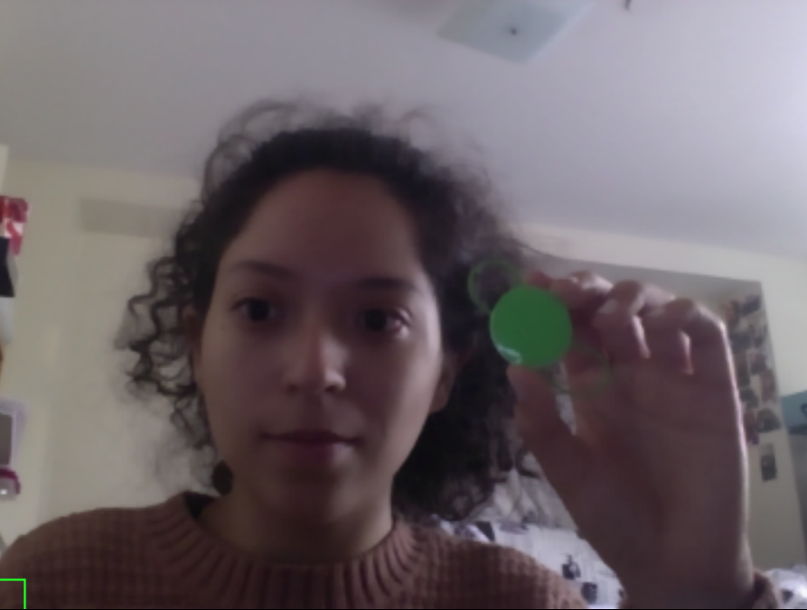
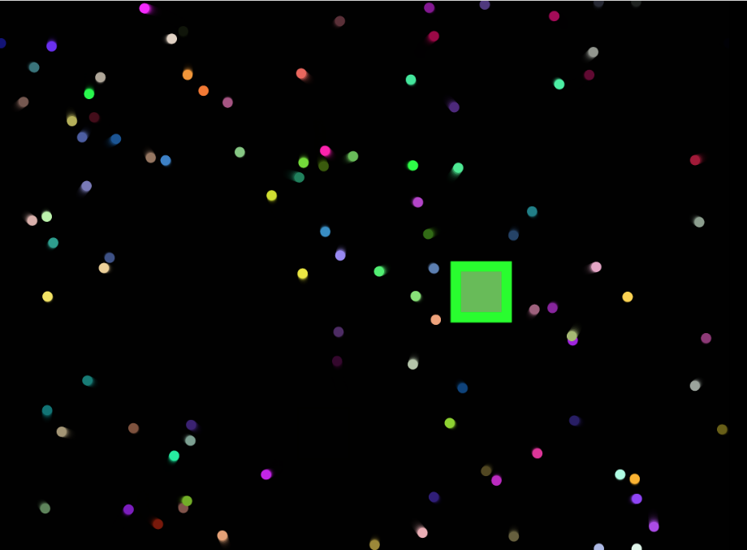
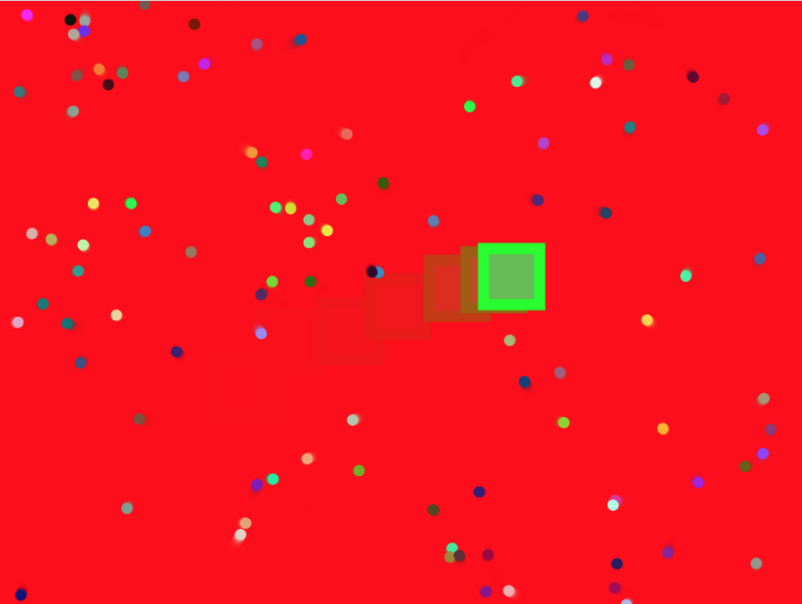

Assignment 7: Tracking
Click here to demo the app!
I used this tracking assignment as a jumping off point for my final project, Aura Reader! In designing this app, I wanted to merge
together what I learned about tracking, with what I learned about particle systems. The result, is this app!

To use this app:
- Find an object to use as a color tracker, preferably of a bright, distinct color.
- Put it in view of the webcam, and select the object with the cursor on the screen.
- The capture will disappear.
- Move your marker around the screen to move around the particles.
- If you move slowly, the background will stay black.
- If you move around more quickly, the background will turn red.